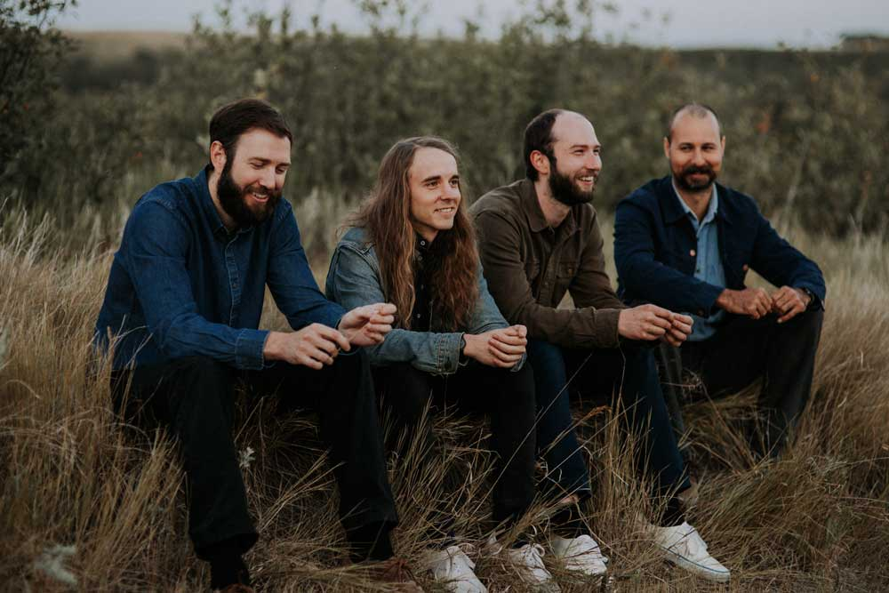

<!DOCTYPE html>
<html lang="eng"></html>
<html>
  <head>
    <meta charset="utf-8" />
    <title>Project 2: Noemi's Music Magazine</title>
    <link rel="stylesheet" href="../code/style.css"/>
    <meta name="viewport" content="width=device-width, initial-scale=1">
    <link rel="preconnect" href="https://fonts.gstatic.com">
    <link href="https://fonts.googleapis.com/css2?family=Abril+Fatface&family=Amiri&display=swap" rel="stylesheet">
  </head>

  <body>
    <header> 
      <h1>Noemi's Music Magazine  </h1>
      <nav>
        <div><a href="../code/index.html">Home</a></div>
        <div>Concerts</div>
        <div>Events</div>
        <div>About</div>
      </nav>
    </header>


<h3>Foxwarren</h3>
<p class="author">by Noemi, 01.01.2021</p>
<p>Foxwarren’s backstory reads like a page torn from the manual of rock & roll authenticity, as this group of siblings and childhood 
friends originally formed more than a decade ago. Growing up in scattered small towns across the Canadian prairies, Andy Shauf 
(guitars/keys/vocals), Dallas Bryson (guitar/vocals), and brothers Darryl Kissick (bass) and Avery Kissick (drums & percussion) 
eventually found themselves in Regina, Saskatchewan. The initial sessions for their self-titled debut began in the Kissicks’ 
parents’ farmhouse while they were away on vacation. Upon their return, Foxwarren were forced to relocate and recording resumed 
back in Regina in a rented house where the members lived as roommates. The band's name comes from the Kissick brothers’ family 
home in Foxwarren, Manitoba.</p>
</body>
</html>